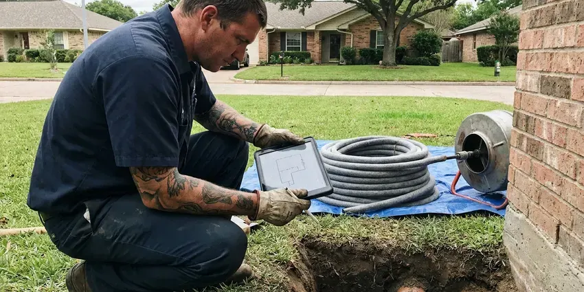

Drain Repairs in Lafayette, CO
Don't let drain issues upend your home in Lafayette, CO. GFR Plumbing is your reliable partner for professional and lasting drain repair solutions.
- Same-Day Drain Repair Service
- Prompt, Local Service
- Local Lafayette Experts
- Quick Drain Service

Get Reliable Drain Repairs From a Local Plumber in Lafayette, CO.
Contact GFR Plumbing today for expert drain repair services and see the difference professional care makes.
Drain Repairs in Lafayette, CO That Fix the Root Problem
GFR Plumbing handles all types of drain repairs across Lafayette, CO. From simple clogs to complex pipe damage, our team uses proven diagnostic tools like sewer cameras to accurately identify the problem and provide lasting solutions.
Our expertise includes:
- Cast iron and ABS drain section replacement inside walls
- Vent repair to stop gurgling drains and sewer gas odors
- Diagnose and clear all types of drain blockages.

Additional Plumbing Repair Services in Lafayette, CO
We offer expert plumbing repair services across Lafayette, CO to stop leaks, clear blockages, and keep every fixture working the way it should.


Customers
Why Choose GFR Plumbing for Drain Repairs in Lafayette, CO?
A drain problem that keeps coming back usually means something is physically wrong with the pipe. We diagnose the cause with a camera or pressure test and fix it properly, so you stop paying for the same clog again and again.
- Lasting Solutions, We focus on providing durable repairs that address the root cause of your drain issues, not just temporary fixes.
- Stocked Trucks, Common drain parts in ABS, PVC and brass are on hand for same-visit repairs.
- Cause Not Symptom, We find out why the drain fails instead of just pushing the clog deeper into the line.
Citywide Coverage
No matter where you are located in Lafayette, our skilled plumbers are just a call away, ready to respond fast to your drain repair emergencies and routine service requests.
Experienced Team
Our team of licensed plumbers at GFR Plumbing has years of hands-on experience with drain repairs in Colorado. They are regularly trained on the latest techniques and best practices to deliver top-quality service.
Safety-First Approach
We always put first the safety and integrity of your property during any drain repair. All work is done in compliance with current plumbing codes, preventing potential hazards and ensuring a safe, functional plumbing system for your Lafayette home or business.
Trusted Certified Lafayette Plumbing Services Professionals
At GFR Plumbing, we take pride in providing certified plumbing services throughout Lafayette, CO. Backed by recognized industry credentials, our experienced plumbers combine technical skill with genuine customer care. Whether it is repair, installation, or maintenance, we follow strict safety and quality standards to deliver lasting results you can trust.
Call Us Now PHCC Plumbing Contractor Recognition
PHCC Plumbing Contractor Recognition Better Business Bureau (BBB) Accreditation
Better Business Bureau (BBB) Accreditation Angi Certified Pro
Angi Certified Pro ISO 9001 Quality Management Certification
ISO 9001 Quality Management CertificationReliable Drain Repair Services in Lafayette, CO
Kitchen Sink Drain Repair in Lafayette, CO
Kitchen drains are prone to clogs from food particles, grease and soap scum. If your kitchen sink is draining slowly or not at all in Lafayette, CO, GFR Plumbing can help. We clear blockages, repair leaks under the sink and address issues with garbage disposals, so your kitchen plumbing is working properly.

Broken Drain Pipe Repair in Lafayette, CO
Broken drain pipes, often caused by shifting soil, tree root intrusion or age, require prompt attention. In Lafayette, CO, our team can diagnose the exact location and extent of the damage using camera inspections. We then perform targeted repairs, which might involve replacing a section of pipe with durable PVC or cast iron, for a long-term fix.
Clogged Drain Repair in Lafayette
Stubborn clogs are a common issue, usually caused by grease, hair, food particles or mineral buildup from hard water. We use specialized tools like augers, snakes and hydro-jetting to break down and remove blockages effectively. Our technicians can pinpoint the exact location of the clog using camera inspections, for a targeted and efficient repair without unnecessary disruption. We address clogs in kitchen sinks, bathroom drains, utility sinks and main sewer lines, restoring proper flow.
Sewer Line Drain Repair in Lafayette
Issues with your main sewer line can affect all drains in your home. Common problems include tree root intrusion, cracks from ground movement or pipe collapses. We offer complete sewer line diagnostics, including video inspections to assess the damage. Depending on the severity, we can use trenchless methods like pipe lining or pipe bursting, which minimize yard disruption, or traditional excavation for severe damage. We ensure your main drain system is fully functional.
Laundry and Floor Drain Repair in Lafayette
Washing machines dump a large volume of water fast, and an undersized or poorly vented standpipe will overflow. We correct standpipe height, replace cracked laundry box drains and add proper venting. For garage and utility floor drains, we restore the trap seal so sewer odor does not escape. We also repair the trap primers that keep those seals full.
Outdoor Drain Repair in Lafayette
Outdoor drains, including yard drains and downspout connections, are essential for managing rainwater and preventing foundation damage, especially during heavy rainfall. We repair and clear blockages in outdoor drainage systems in Lafayette, restoring proper water diversion and protecting your property from excess moisture and erosion.
Sewer Drain Line Repair in Lafayette
The main sewer drain line carries all wastewater from your home. Issues like blockages, cracks or collapses in this line can lead to whole-house plumbing problems. Our plumbers in Lafayette are experts in sewer drain line repair, using trenchless methods where possible to limit disruption to your property, or traditional excavation when necessary for severe damage.

Emergency Drain Repairs in Lafayette, CO
A sudden drain backup or major leak is an emergency that needs immediate attention. GFR Plumbing offers emergency drain repair services around the clock in Lafayette, CO. We understand that severe drain issues can rapidly lead to extensive property damage and health hazards. Our emergency team is equipped to handle burst pipes, severe clogs and main line backups, providing fast diagnosis and effective, urgent repairs to restore safety and function.
Drain Repairs Near Me in Lafayette, CO
We pride ourselves on being the go-to local choice for drain repairs, offering efficient service without long wait times. Our close proximity means we can send a skilled plumber to your location in Lafayette faster, reducing the inconvenience and potential damage caused by drain issues. Contact us for local expertise you can count on.
Our local presence in Lafayette means we understand the plumbing challenges faced by homes and businesses in the area. Whether you're dealing with a minor clog or a major pipe repair, our team is always nearby and ready to deliver top-quality drain repair solutions.
GFR Plumbing at a Glance
- Licensed and insured plumbers serving Lafayette, CO
- 24/7 emergency service with same-day scheduling
- Upfront, flat-rate pricing before work begins
- 4.8-star rated by 750+ Colorado customers
Lafayette Map
Lafayette Information
- Population
- 30,439
- Area codes
- 303/720/970
- Service area
- Lafayette and communities within 40 miles
- Nearby
- Broomfield, Westminster, Boulder, Thornton
Timely drain repairs are crucial for homes in Lafayette, CO, where shifting soil can stress underground piping and mineral buildup can narrow drains over time. Around Lafayette, a yearly water heater flush helps clear the sediment that collects at the bottom of the tank.
Expert Services
Trust our professionals for reliable GFR Plumbing solutions in Lafayette, CO.
Our Specialized Plumbing Services in Lafayette, CO
At GFR Plumbing, we provide a complete range of plumbing services across Lafayette, CO. From leak detection to full system installations, our team ensures fast, precise, and affordable service for both residential and commercial properties. Explore our core services below:


How Our Drain Repair Process Works in Lafayette, CO
At GFR Plumbing, our drain repair process is designed to be thorough, transparent and efficient, delivering lasting solutions for your home in Lafayette.
Request a Quote
Call (720) 727-9398 and describe which drain is giving you trouble and how long it has been happening. We will schedule a visit, often the same day.
Diagnose the Drain
We inspect the trap, pipe and vent and run a camera if the problem is deeper in the line. You get a clear explanation and a firm price.
Repair and Flow Test
We replace or repair the failed parts and run water at full volume to confirm the drain works. We check for leaks and clean the area before we leave.
Frequently Asked Questions About Drain Repairs in Lafayette
Simple trap or slip-joint repairs usually cost $150 to $350. Replacing a section of drain pipe usually runs $400 to $1,200, and cast iron stack replacement can range from $2,000 to $6,000 depending on access. We provide a written price before starting.
Repeat clogs often come from grease buildup, hard water scale, poor pipe slope, a missing vent or a damaged pipe that catches debris. A camera inspection shows which cause you are dealing with so it can be fixed permanently.
We work with all common types of drain pipe found in Colorado homes, including PVC, ABS, cast iron and copper. Our technicians are experienced in repairing and replacing sections of various pipe materials for compatibility and longevity with your existing plumbing system.
Hydro-jetting is a powerful drain cleaning method that uses high-pressure water to clear out stubborn blockages, grease buildup, mineral deposits and even tree roots from your pipes. It is commonly used for severe clogs or as a preventive measure to thoroughly clean drain lines, leaving them almost like new.
Drain cleaning removes a blockage from an otherwise sound pipe. Drain repair fixes the pipe itself, such as a crack, bad slope, broken fitting or missing vent. Many recurring clogs need repair, not more snaking.
Minor fixture drain repairs usually do not require a permit. Replacing drain stacks, relocating drains or adding new lines often does, depending on the city. We handle permits when they apply.
Yes. Our workmanship is warrantied in writing and replacement parts carry their manufacturer warranties. We explain the coverage at the time of the visit.
Tightening a loose slip nut or replacing a plastic trap is a reasonable DIY job. If the leak is from a cracked tailpiece, a corroded metal drain or inside a wall, a plumber can make a lasting repair and check for hidden damage.
What People Are Saying About Our Plumbing Experts?

Robert G.
The trenchless sewer replacement saved our front yard. They walked us through the camera inspection footage first so we knew exactly what we were paying for.
Sewer Line Replacement · Westminster, CO
Daniel K.
A pipe burst at 11 pm and they actually answered. The plumber showed up within the hour, shut everything down, and had us back to normal the next morning. Could not ask for more.
Emergency Plumbing · Arvada, CO
Patricia H.
We had a slab leak that two other companies could not find. GFR Plumbing located it in under an hour, explained our options, and the price matched the quote to the dollar.
Slab Leak Repair · Lafayette, COJames P.
Our commercial plumbing system had a leak under the sink, and GFR Plumbing handled it professionally. The plumbers arrived quickly and restored everything without disruption to our customers.
Commercial Plumbing · Longmont, CO
Mark T.
When our office needed drain cleaning, GFR Plumbing provided quick, reliable service. The plumber arrived on time and made sure every drain flowed perfectly before leaving. Very satisfied.
Drain Cleaning · Thornton, CO
Laura S.
I scheduled a water heater replacement, and the team made the process smooth and affordable. The new unit works perfectly, and they cleaned up after completing the job.
Water Heater Replacement · Lafayette, CO